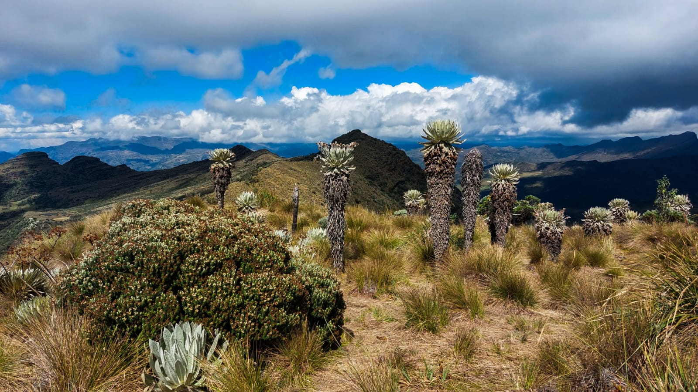

Páramo de Ocetá (Laguna Negra)
Acompáñanos con nuestro guía, visitando la Laguna Negra y su mirador a 3.800 metros de altura. Contemplarás la magnífica fauna del Páramo de Ocetá y el impresionante Valle de Frailejones desde el famoso Mirador de Balcones.
Ver más
Otras lagunas
Descubre la Laguna de la Estrella, una joya oculta en el Páramo de San Ignacio, municipio de Mongua. Un destino ecoturístico destacado donde podrás conectar con la naturaleza virgen y explorar paisajes únicos lejos de las rutas tradicionales.
Ver más
Caminata de aclimatación
Disfruta de un recorrido hacia un majestuoso mirador natural en Monguí, Boyacá. Ofrece vistas panorámicas del municipio y es ideal para aclimatar el cuerpo antes de aventuras mayores, perfecta para las amantes del senderismo suave.
Ver más
Caminata del Peregrino
Un destino que combina belleza natural, con un profundo significado espiritual, ubicado en la vereda Duzgua. En este recorrido descubrirás paisajes únicos y podrás observar diversas especies de frailejones, explicadas a detalle por nuestro guía experto.
Ver más
Trekking XUÉ Ancestral
Una travesía inolvidable entre dos pueblos hermanos, diseñada para los verdaderos amantes del senderismo. Atravesarás ecosistemas de paramo y alta montaña, sumergiéndote en la biodiversidad andina con avistamiento de aves y flora nativa.
Ver más
Lago de Tota
Recorre los pueblitos que bordean el lago natural más grande de Colombia. Haremos paradas estratégicas en miradores para admirar este precisos ecosistema, considerado una de las joyas ecoturísticas más importantes de los Andes.
Ver más
Taller Artesanal del Balón
Sumérgete en la tradición mas famosa del pueblo visitando una autentica fabrica de balones familiar. Aprenderás todo sobre el proceso de manufactura y vivirás la experiencia única de coser y confeccionar tu propio balón par llevarte un recuerdo inigualable.
Ver más
Centro Histórico de Monguí
Reconocido como uno de los pueblos más lindos de Colombia, Monguí te espera con sus calles empedradas. Podrás visitar la majestuosa Basílica, explorar talleres artesanales únicos y disfrutar de una experiencia inolvidable rodeado de la tranquilidad de los paisajes boyacenses.
Ver más
Dia como campesino
Cambia el ruido de la ciudad por el canto de la montaña. Vive una jornada autentica en el páramo de Ocetá: cosecha tu alimento, cuida los animales y comparte un almuerzo tradicional en fogón de leña con una familia local
Ver más
Taller de lana
Descubre el rico patrimonio textil de Colombia a través de este taller practico, Aprenderás técnicas ancestrales de tejido a mano de expertos artesanos, conectando profundamente con la comunidad local que preserva estas tradiciones vivas.
Ver más
Taller de Pintura
Explora tu lado creativo guiado por una talentosa artista de Mongui. En este taller podrás pintar y personalizar piezas únicas como llaveros, separadores o cuadros, creando un recuerdo especial inspirado en el arte boyacense.
Ver más